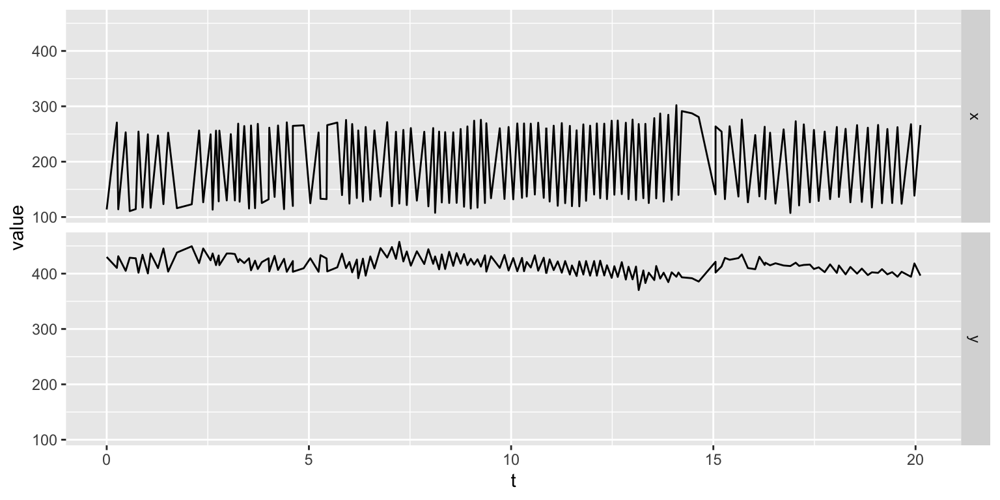

mhealthtools offers a set of tools to extract features from some of the sensors present in almost all of the modern day phones. Here we present examples from accelerometer and gyroscope data.
Let’s load the package first
Accelerometer
Data format and Sample data
mhealthtools already comes preloaded with sample accelerometer data. You can access the data through data(accelerometer_data) or just accelerometer_data. The first five rows are shown below, to give you an idea of the structure of the data (this is the input format to the functions that extract accelerometer features). Where t is the timestamp; x, y and z are the X, Y and Z- axis respectively.
#> # A tibble: 5 x 4
#> t x y z
#> <dbl> <dbl> <dbl> <dbl>
#> 1 0 -0.0126 -0.0118 -0.00172
#> 2 0.0100 0.0169 0.00320 -0.00138
#> 3 0.0200 0.0169 0.00322 -0.00138
#> 4 0.0300 -0.0115 -0.00671 -0.00679
#> 5 0.0400 0.00820 -0.00367 -0.00208To use the default feature extraction pipelines you need to get the data in the proper format – as that of the sample data. You can also define your own features or feed in a custom model to extract features in mhealthtools as described in Extending mhealthtools under the “Sensor modules” section header.
Let’s plot to see how the accelerometer data actually looks like
 We are looking at 10s of data sampled at a sampling rate (for accelerometer data) of 100Hz. The data looks noisy, and looks like it could make good use of some pre-processing like frequency filtering, maybe subsetting the time (time filtering) – all of which
We are looking at 10s of data sampled at a sampling rate (for accelerometer data) of 100Hz. The data looks noisy, and looks like it could make good use of some pre-processing like frequency filtering, maybe subsetting the time (time filtering) – all of which mhealthtools conveniently offers.
Extracting features (using pre-existing pipeline)
Let’s take a look at the default feature extraction pipeline, whose features are all classical signal processing features based on time domain, frequency domain and the energy bands of the frequency spectrum.
accel_features <- accelerometer_features(accelerometer_data)
#> Joining, by = "axis"
# using default parametersThe output file is a list containing features extracted using default functions ($extracted_features), features calculated using models ($model_features) and an element for error ($error). Let’s look at the $extracted_features to see how the default features look like
dplyr::glimpse(accel_features$extracted_features)
#> Observations: 3
#> Variables: 89
#> Groups: axis [3]
#> $ measurementType <chr> "acceleration", "acceleration", "acceleration"
#> $ axis <chr> "x", "y", "z"
#> $ mean.tm <dbl> 0.0005132054, -0.0001211827, -0.0033847533
#> $ median.tm <dbl> 4.757780e-04, -9.231558e-05, -3.466888e-03
#> $ mode.tm <dbl> -0.04925962, -0.01610416, -0.02394948
#> $ mx.tm <dbl> 0.07615398, 0.01314223, 0.01382407
#> $ mn.tm <dbl> -0.04925962, -0.01610416, -0.02394948
#> $ sd.tm <dbl> 0.005912192, 0.001813626, 0.004711757
#> $ skewness.tm <dbl> 1.93751580, -1.54331497, 0.02581527
#> $ kurtosis.tm <dbl> 57.9313713, 24.2522045, 0.9649632
#> $ Q25.tm <dbl> -0.0007594122, -0.0007715918, -0.0060547352
#> $ Q75.tm <dbl> 0.0015810156, 0.0006449488, -0.0005952390
#> $ range.tm <dbl> 0.12541360, 0.02924638, 0.03777354
#> $ rough.tm <dbl> 0.051620598, 0.009493294, 0.026567162
#> $ rugo.tm <dbl> 0.005079139, 0.002021997, 0.004086025
#> $ energy.tm <dbl> 0.034830263, 0.003267596, 0.033298439
#> $ mobility.tm <dbl> 86.05755, 111.67935, 86.86936
#> $ mtkeo.tm <dbl> 2.470259e-05, 3.087779e-06, 1.997911e-05
#> $ dfa.tm <dbl> 0.4967313, 0.4857213, 0.8726379
#> $ rmsmag.tm <dbl> 0.005931449, 0.001816756, 0.005799551
#> $ IQR.tm <dbl> -0.002340428, -0.001416541, -0.005459496
#> $ complexity.tm <dbl> 142.4852, 153.4910, 127.0640
#> $ mn.fr <dbl> 12.54914, 18.01419, 13.60233
#> $ mx.fr <dbl> 0.010932476, 0.006890458, 0.025827734
#> $ sd.fr <dbl> 10.14498, 12.54150, 7.93065
#> $ sem.fr <dbl> 0.4536972, 0.5608728, 0.3546694
#> $ md.fr <dbl> 9.229673, 14.245799, 11.236123
#> $ mod.fr <dbl> 8.928705, 23.876762, 10.132576
#> $ Q25.fr <dbl> 6.420642, 8.326770, 10.032253
#> $ Q75.fr <dbl> 13.64386, 24.37837, 13.44322
#> $ IQR.fr <dbl> 7.223222, 16.051605, 3.410966
#> $ cent.fr <dbl> 12.54914, 18.01419, 13.60233
#> $ skew.fr <dbl> 1.7448851, 0.9508071, 3.5284402
#> $ kurt.fr <dbl> 5.095251, 3.041902, 15.531842
#> $ sfm.fr <dbl> 0.4186637, 0.7283852, 0.3504015
#> $ sh.fr <dbl> 0.8859245, 0.9549106, 0.8136382
#> $ ewt.permEnt.fr <dbl> 0.31748376, 0.65774910, 0.02755104
#> $ ewt.shannonEnt.fr <dbl> 0.31748376, 0.65774910, 0.02755104
#> $ ewt.simpsonEnt.fr <dbl> 0.241505489, 0.586861203, 0.008504518
#> $ ewt.renyiEnt.fr <dbl> 0.171749226, 0.549242482, 0.007774251
#> $ ewt.tsallisEnt.fr <dbl> 2.759414, 3.201290, 1.194959
#> $ EnergyInBand1 <dbl> 0.0006685878, 0.0009768876, 0.0001362684
#> $ EnergyInBand1_5 <dbl> 0.0007657443, 0.0009565505, 0.0001722997
#> $ EnergyInBand2 <dbl> 0.0009145449, 0.0009388591, 0.0002339394
#> $ EnergyInBand2_5 <dbl> 0.0011298737, 0.0009290064, 0.0003293166
#> $ EnergyInBand3 <dbl> 0.0014219198, 0.0009313928, 0.0004404512
#> $ EnergyInBand3_5 <dbl> 0.0017778105, 0.0009497605, 0.0004970005
#> $ EnergyInBand4 <dbl> 0.0021406215, 0.0009875333, 0.0004601583
#> $ EnergyInBand4_5 <dbl> 0.0024247647, 0.0010480615, 0.0003873989
#> $ EnergyInBand5 <dbl> 0.0025856607, 0.0011344887, 0.0003311468
#> $ EnergyInBand5_5 <dbl> 0.0026620502, 0.0012488862, 0.0003037639
#> $ EnergyInBand6 <dbl> 0.0027359708, 0.0013902187, 0.0003050667
#> $ EnergyInBand6_5 <dbl> 0.0028809739, 0.0015509998, 0.0003380802
#> $ EnergyInBand7 <dbl> 0.0031456409, 0.0017139087, 0.0004162344
#> $ EnergyInBand7_5 <dbl> 0.0035438091, 0.0018522732, 0.0005752722
#> $ EnergyInBand8 <dbl> 0.0040114858, 0.0019388686, 0.0009076112
#> $ EnergyInBand8_5 <dbl> 0.004342768, 0.001960414, 0.001671585
#> $ EnergyInBand9 <dbl> 0.004268236, 0.001925489, 0.003605213
#> $ EnergyInBand9_5 <dbl> 0.003759722, 0.001857969, 0.007722487
#> $ EnergyInBand10 <dbl> 0.00308545, 0.00178346, 0.01014874
#> $ EnergyInBand10_5 <dbl> 0.002489936, 0.001720109, 0.008054790
#> $ EnergyInBand11 <dbl> 0.002049418, 0.001676330, 0.006194727
#> $ EnergyInBand11_5 <dbl> 0.001744584, 0.001651709, 0.005323243
#> $ EnergyInBand12 <dbl> 0.001531306, 0.001637868, 0.004741271
#> $ EnergyInBand12_5 <dbl> 0.001364994, 0.001618991, 0.003908906
#> $ EnergyInBand13 <dbl> 0.001207018, 0.001574495, 0.002873446
#> $ EnergyInBand13_5 <dbl> 0.001033293, 0.001486865, 0.002005887
#> $ EnergyInBand14 <dbl> 0.0008444226, 0.0013526330, 0.0014367575
#> $ EnergyInBand14_5 <dbl> 0.0006613718, 0.0011867697, 0.0010982635
#> $ EnergyInBand15 <dbl> 0.0005057081, 0.0010141769, 0.0009027810
#> $ EnergyInBand15_5 <dbl> 0.0003860372, 0.0008563231, 0.0007904480
#> $ EnergyInBand16 <dbl> 0.0002996139, 0.0007245370, 0.0007228753
#> $ EnergyInBand16_5 <dbl> 0.0002392861, 0.0006212876, 0.0006728321
#> $ EnergyInBand17 <dbl> 0.0001980282, 0.0005443042, 0.0006211805
#> $ EnergyInBand17_5 <dbl> 0.0001704759, 0.0004898880, 0.0005602175
#> $ EnergyInBand18 <dbl> 0.0001530060, 0.0004546987, 0.0004948121
#> $ EnergyInBand18_5 <dbl> 0.0001434202, 0.0004365288, 0.0004354811
#> $ EnergyInBand19 <dbl> 0.0001406649, 0.0004346597, 0.0003901818
#> $ EnergyInBand19_5 <dbl> 0.0001447276, 0.0004502167, 0.0003619761
#> $ EnergyInBand20 <dbl> 0.0001568012, 0.0004868481, 0.0003506975
#> $ EnergyInBand20_5 <dbl> 0.0001798933, 0.0005521343, 0.0003544047
#> $ EnergyInBand21 <dbl> 0.0002203630, 0.0006604446, 0.0003687893
#> $ EnergyInBand21_5 <dbl> 0.0002916850, 0.0008384498, 0.0003848284
#> $ EnergyInBand22 <dbl> 0.0004239098, 0.0011338689, 0.0003883533
#> $ EnergyInBand22_5 <dbl> 0.0006855076, 0.0016155882, 0.0003680242
#> $ EnergyInBand23 <dbl> 0.0011891598, 0.0022816582, 0.0003269122
#> $ EnergyInBand23_5 <dbl> 0.0017266609, 0.0027347848, 0.0002796118
#> $ EnergyInBand24 <dbl> 0.0014532952, 0.0024060068, 0.0002385602
#> $ EnergyInBand24_5 <dbl> 0.0008475218, 0.0016755739, 0.0002084247accelerometer_features also offers multiple parameter options. The following examples are an effort to make the user aware of the options.
In the following example, we change the window length (to 128, with NULL being the default - i.e no windowing), having the 50% overlap between consecutive windows for the same accelerometer_data used before
accel_features <- accelerometer_features(
accelerometer_data,
window_length = 128,
window_overlap = 0.5)
#> Joining, by = c("axis", "window")
# Consider a window length of 128 samples,
# 50% overlap between consecutive windowsdplyr::glimpse(accel_features$extracted_features)
#> Observations: 42
#> Variables: 92
#> Groups: axis, window [42]
#> $ measurementType <chr> "acceleration", "acceleration", "acceleration", "ac…
#> $ axis <chr> "x", "x", "x", "x", "x", "x", "x", "x", "x", "x", "…
#> $ window <int> 1, 2, 3, 4, 5, 6, 7, 8, 9, 10, 11, 12, 13, 14, 1, 2…
#> $ window_start_time <dbl> 0.000000, 0.639875, 1.279676, 1.919554, 2.559429, 3…
#> $ window_end_time <dbl> 1.269678, 1.909555, 2.549406, 3.189308, 3.829185, 4…
#> $ mean.tm <dbl> 8.354704e-04, 3.412458e-04, -2.420230e-05, 9.355577…
#> $ median.tm <dbl> 7.360068e-04, 1.845610e-04, -3.099760e-05, -1.31558…
#> $ mode.tm <dbl> -0.007909911, -0.002100701, -0.003856577, -0.003742…
#> $ mx.tm <dbl> 0.005782297, 0.002611749, 0.003439298, 0.003257005,…
#> $ mn.tm <dbl> -0.007909911, -0.002100701, -0.003856577, -0.003742…
#> $ sd.tm <dbl> 0.0021098383, 0.0008173052, 0.0010282861, 0.0010764…
#> $ skewness.tm <dbl> -0.7800600, 0.1384803, -0.3874994, 0.1900005, -0.44…
#> $ kurtosis.tm <dbl> 2.2723878, 0.5509335, 3.1663614, 1.7899734, 2.89854…
#> $ Q25.tm <dbl> -9.806206e-06, -7.974707e-05, -3.024969e-04, -3.728…
#> $ Q75.tm <dbl> 0.0021341151, 0.0007251562, 0.0003792807, 0.0004257…
#> $ range.tm <dbl> 0.013692208, 0.004712450, 0.007295875, 0.006999345,…
#> $ rough.tm <dbl> 0.0021301764, 0.0002716502, 0.0004120056, 0.0003060…
#> $ rugo.tm <dbl> 0.0025402687, 0.0009162207, 0.0011334511, 0.0010804…
#> $ energy.tm <dbl> 6.546754e-04, 9.973988e-05, 1.343613e-04, 1.482701e…
#> $ mobility.tm <dbl> 121.02470, 112.68379, 110.79849, 100.89222, 112.539…
#> $ mtkeo.tm <dbl> 4.513813e-06, 6.133367e-07, 9.549749e-07, 1.138678e…
#> $ dfa.tm <dbl> 0.8269594, 0.7635636, 0.3816519, 0.4614532, 0.45613…
#> $ rmsmag.tm <dbl> 0.0022615596, 0.0008827332, 0.0010245474, 0.0010762…
#> $ IQR.tm <dbl> -0.0021439213, -0.0008049033, -0.0006817776, -0.000…
#> $ complexity.tm <dbl> 162.0626, 160.4580, 159.7374, 144.4349, 157.0816, 1…
#> $ mn.fr <dbl> 19.220912, 17.687982, 17.953930, 15.665986, 18.5824…
#> $ mx.fr <dbl> 0.017459804, 0.023143204, 0.030951875, 0.029164742,…
#> $ sd.fr <dbl> 13.741420, 12.937928, 12.322343, 10.265806, 12.2678…
#> $ sem.fr <dbl> 0.6145350, 0.5786017, 0.5510719, 0.4591008, 0.54863…
#> $ md.fr <dbl> 21.870312, 11.838059, 11.436768, 11.035478, 11.6374…
#> $ mod.fr <dbl> 23.375149, 11.236123, 10.935156, 10.333221, 11.0354…
#> $ Q25.fr <dbl> 8.928705, 10.433543, 10.533866, 9.931930, 10.935156…
#> $ Q75.fr <dbl> 24.37837, 27.38805, 25.78289, 20.16483, 25.08063, 3…
#> $ IQR.fr <dbl> 15.449670, 16.954508, 15.249025, 10.232898, 14.1454…
#> $ cent.fr <dbl> 19.220912, 17.687982, 17.953930, 15.665986, 18.5824…
#> $ skew.fr <dbl> 2.97666505, 4.10006726, 4.97021509, 4.99309739, 6.2…
#> $ kurt.fr <dbl> 13.228035, 22.246115, 29.549173, 30.069951, 44.8222…
#> $ sfm.fr <dbl> 0.5401249, 0.5529301, 0.5198017, 0.5375210, 0.48789…
#> $ sh.fr <dbl> 0.8996381, 0.8896354, 0.8605479, 0.8743525, 0.83902…
#> $ ewt.permEnt.fr <dbl> 0.69523728, 0.47064628, 0.12803394, 0.09673172, 0.0…
#> $ ewt.shannonEnt.fr <dbl> 0.69523728, 0.47064628, 0.12803394, 0.09673172, 0.0…
#> $ ewt.simpsonEnt.fr <dbl> 0.60179283, 0.35172429, 0.07636468, 0.03766140, 0.0…
#> $ ewt.renyiEnt.fr <dbl> 0.57211457, 0.26931091, 0.05730237, 0.03494309, 0.0…
#> $ ewt.tsallisEnt.fr <dbl> 3.1996039, 3.2191152, 1.8891253, 1.3828046, 1.30420…
#> $ EnergyInBand1 <dbl> 0.0021645888, 0.0014507913, 0.0001518710, 0.0008027…
#> $ EnergyInBand1_5 <dbl> 0.0014499868, 0.0009489758, 0.0001646404, 0.0006084…
#> $ EnergyInBand2 <dbl> 0.0010337827, 0.0006727009, 0.0001832181, 0.0004736…
#> $ EnergyInBand2_5 <dbl> 0.0007865737, 0.0005144819, 0.0002088680, 0.0003850…
#> $ EnergyInBand3 <dbl> 0.0006345211, 0.0004200020, 0.0002430872, 0.0003280…
#> $ EnergyInBand3_5 <dbl> 0.0005389301, 0.0003625544, 0.0002873062, 0.0002929…
#> $ EnergyInBand4 <dbl> 0.0004793323, 0.0003285626, 0.0003422715, 0.0002736…
#> $ EnergyInBand4_5 <dbl> 0.0004447577, 0.0003109686, 0.0004071672, 0.0002672…
#> $ EnergyInBand5 <dbl> 0.0004295419, 0.0003062489, 0.0004790290, 0.0002726…
#> $ EnergyInBand5_5 <dbl> 0.0004313876, 0.0003130799, 0.0005535310, 0.0002909…
#> $ EnergyInBand6 <dbl> 0.0004506326, 0.0003318404, 0.0006277340, 0.0003255…
#> $ EnergyInBand6_5 <dbl> 0.0004903443, 0.0003646665, 0.0007035858, 0.0003835…
#> $ EnergyInBand7 <dbl> 0.0005572573, 0.0004160846, 0.0007902402, 0.0004793…
#> $ EnergyInBand7_5 <dbl> 0.0006639285, 0.0004945876, 0.0009055607, 0.0006422…
#> $ EnergyInBand8 <dbl> 0.0008328119, 0.0006161945, 0.0010805000, 0.0009390…
#> $ EnergyInBand8_5 <dbl> 0.0011023231, 0.0008128440, 0.0013735732, 0.0015402…
#> $ EnergyInBand9 <dbl> 0.0015269363, 0.0011540049, 0.0019137178, 0.0029454…
#> $ EnergyInBand9_5 <dbl> 0.0021216574, 0.0018082649, 0.0030329472, 0.0065448…
#> $ EnergyInBand10 <dbl> 0.0026432241, 0.0032239091, 0.0056514945, 0.0112716…
#> $ EnergyInBand10_5 <dbl> 0.0025654590, 0.0063188558, 0.0107257307, 0.0079942…
#> $ EnergyInBand11 <dbl> 0.0019415391, 0.0090013867, 0.0106157574, 0.0040038…
#> $ EnergyInBand11_5 <dbl> 0.0013187688, 0.0058068627, 0.0052057125, 0.0022963…
#> $ EnergyInBand12 <dbl> 0.0008982747, 0.0027891301, 0.0025213622, 0.0015447…
#> $ EnergyInBand12_5 <dbl> 0.0006394463, 0.0014876672, 0.0014424427, 0.0011723…
#> $ EnergyInBand13 <dbl> 0.0004793055, 0.0009090560, 0.0009491521, 0.0009747…
#> $ EnergyInBand13_5 <dbl> 0.0003771967, 0.0006183954, 0.0006949487, 0.0008710…
#> $ EnergyInBand14 <dbl> 0.0003101058, 0.0004575130, 0.0005538686, 0.0008251…
#> $ EnergyInBand14_5 <dbl> 0.0002651181, 0.0003627069, 0.0004739021, 0.0008192…
#> $ EnergyInBand15 <dbl> 0.0002348342, 0.0003053914, 0.0004314810, 0.0008426…
#> $ EnergyInBand15_5 <dbl> 0.0002149298, 0.0002717615, 0.0004155729, 0.0008849…
#> $ EnergyInBand16 <dbl> 0.0002028802, 0.0002551041, 0.0004214095, 0.0009314…
#> $ EnergyInBand16_5 <dbl> 0.0001972961, 0.0002527588, 0.0004475228, 0.0009610…
#> $ EnergyInBand17 <dbl> 0.0001975932, 0.0002651651, 0.0004933228, 0.0009529…
#> $ EnergyInBand17_5 <dbl> 0.0002038682, 0.0002963549, 0.0005549474, 0.0008992…
#> $ EnergyInBand18 <dbl> 0.0002169382, 0.0003564403, 0.0006177139, 0.0008123…
#> $ EnergyInBand18_5 <dbl> 0.0002385694, 0.0004685803, 0.0006506723, 0.0007145…
#> $ EnergyInBand19 <dbl> 0.0002720046, 0.0006877126, 0.0006226959, 0.0006247…
#> $ EnergyInBand19_5 <dbl> 0.0003230767, 0.0011414394, 0.0005374974, 0.0005521…
#> $ EnergyInBand20 <dbl> 0.0004026192, 0.0019440211, 0.0004321626, 0.0004992…
#> $ EnergyInBand20_5 <dbl> 0.0005320651, 0.0022126797, 0.0003386017, 0.0004653…
#> $ EnergyInBand21 <dbl> 7.577500e-04, 1.344381e-03, 2.675508e-04, 4.495258e…
#> $ EnergyInBand21_5 <dbl> 1.191604e-03, 6.883780e-04, 2.173262e-04, 4.513430e…
#> $ EnergyInBand22 <dbl> 2.133911e-03, 3.885363e-04, 1.830780e-04, 4.721853e…
#> $ EnergyInBand22_5 <dbl> 4.284392e-03, 2.472277e-04, 1.605088e-04, 5.155085e…
#> $ EnergyInBand23 <dbl> 6.790669e-03, 1.736121e-04, 1.466364e-04, 5.872375e…
#> $ EnergyInBand23_5 <dbl> 4.901503e-03, 1.319628e-04, 1.396774e-04, 6.949585e…
#> $ EnergyInBand24 <dbl> 2.416939e-03, 1.071123e-04, 1.388309e-04, 8.423169e…
#> $ EnergyInBand24_5 <dbl> 1.293177e-03, 9.201437e-05, 1.441879e-04, 1.010820e…Notice how we now have three extra columns in the feature extraction output namely, window, window_start_time and window_stop_time - which indicate the number of each window in the signal (the first window is window 1, the next consecutive window is window 2 and so on), and the start and stop time respectively of that window.
There are many other possible use cases to calculate the accelerometer features. The time_filter parameter decides the time window to be operated on in the accelerometer signal. The window_overlap parameter decides the amount of overlap between consecutive windows. The frequency_filter parameter specifies the frequency range to keep for the analysis.
accel_features <- accelerometer_features(accelerometer_data,
time_filter = c(2,5))
# Consider the time ranges between 2 and 5s onlyaccel_features <- accelerometer_features(accelerometer_data,
frequency_filter = c(4,16))
# Consider the frequencies only from 4Hz to 16HzThere are also advanced processing techniques that you can apply to the signal like detrending (using loess), or decompose the signal into Intrinsic Mode Functions (IMF) using the Hilbert Huang Transform. detrend and IMF respectively are the parameters that refer to these techniques.
accel_features <- accelerometer_features(accelerometer_data,
IMF = 2)
# Consider decomposing the signal into 2 IMFs and then running both the IMFs through
# the default feature extraction pipelinePlease read the function documentation ?accelerometer_features for more info.
Gyroscope
Data format and Sample data
mhealthtools already comes preloaded with sample gyroscope data. You can access the data through data(gyroscope_data) or mhealthtools::gyroscope_data. The format is similar to the accelerometer data described above.
#> # A tibble: 5 x 4
#> t x y z
#> <dbl> <dbl> <dbl> <dbl>
#> 1 0 0.00247 0.00589 0.0130
#> 2 0.0100 0.00256 0.0123 0.00867
#> 3 0.0200 0.000606 0.00182 -0.000911
#> 4 0.0300 -0.00261 -0.0152 0.000186
#> 5 0.0400 -0.00812 -0.0303 0.00977Let’s plot to see how the gyroscope data actually looks like

Extracting features (using pre-existing pipeline)
The format of the gyroscope feature extraction pipeline is similar to that of the accelerometer feature extraction pipeline mentioned above. Let’s take a look at the default features.
gyro_features <- gyroscope_features(gyroscope_data)
#> Joining, by = "axis"
# using default parametersdplyr::glimpse(gyro_features$extracted_features)
#> Observations: 3
#> Variables: 89
#> Groups: axis [3]
#> $ measurementType <chr> "velocity", "velocity", "velocity"
#> $ axis <chr> "x", "y", "z"
#> $ mean.tm <dbl> -9.187330e-05, -3.966575e-05, 1.555326e-03
#> $ median.tm <dbl> -0.0004769747, -0.0019704553, -0.0008322176
#> $ mode.tm <dbl> -0.04829564, -0.12734382, -0.01572245
#> $ mx.tm <dbl> 0.08174199, 0.21939799, 0.23624235
#> $ mn.tm <dbl> -0.04829564, -0.12734382, -0.01572245
#> $ sd.tm <dbl> 0.01409210, 0.03788106, 0.01899050
#> $ skewness.tm <dbl> 0.6218561, 0.6426371, 9.1167515
#> $ kurtosis.tm <dbl> 2.677648, 2.606474, 90.922635
#> $ Q25.tm <dbl> -0.008047527, -0.022702481, -0.001780266
#> $ Q75.tm <dbl> 0.0079516817, 0.0210603848, -0.0006332812
#> $ range.tm <dbl> 0.1300376, 0.3467418, 0.2519648
#> $ rough.tm <dbl> 0.04530677, 0.30367983, 0.02164214
#> $ rugo.tm <dbl> 0.008720638, 0.023363252, 0.006468431
#> $ energy.tm <dbl> 0.1964111, 1.4191913, 0.3590671
#> $ mobility.tm <dbl> 61.98993, 61.78168, 34.12008
#> $ mtkeo.tm <dbl> 1.292973e-04, 9.391368e-04, 7.274836e-05
#> $ dfa.tm <dbl> 0.4517450, 0.4528631, 0.7366846
#> $ rmsmag.tm <dbl> 0.01408528, 0.03786194, 0.01904453
#> $ IQR.tm <dbl> -0.015999208, -0.043762865, -0.001146985
#> $ complexity.tm <dbl> 77.74711, 75.13211, 72.44406
#> $ mn.fr <dbl> 9.345675, 9.347826, 4.286148
#> $ mx.fr <dbl> 0.02655169, 0.02452339, 0.01510520
#> $ sd.fr <dbl> 4.037173, 3.828263, 3.602989
#> $ sem.fr <dbl> 0.1805479, 0.1712051, 0.1611306
#> $ md.fr <dbl> 10.132576, 10.132576, 3.611611
#> $ mod.fr <dbl> 10.13258, 10.13258, 0.00000
#> $ Q25.fr <dbl> 7.925480, 8.126125, 1.705483
#> $ Q75.fr <dbl> 11.236123, 11.336446, 6.019352
#> $ IQR.fr <dbl> 3.310643, 3.210321, 4.313869
#> $ cent.fr <dbl> 9.345675, 9.347826, 4.286148
#> $ skew.fr <dbl> 3.435137, 3.227019, 2.057825
#> $ kurt.fr <dbl> 15.636157, 13.656143, 5.751277
#> $ sfm.fr <dbl> 0.06814107, 0.04688567, 0.03897488
#> $ sh.fr <dbl> 0.7705457, 0.7675561, 0.7588096
#> $ ewt.permEnt.fr <dbl> 2.051620e-01, 2.007885e-01, 3.375679e-05
#> $ ewt.shannonEnt.fr <dbl> 2.051620e-01, 2.007885e-01, 3.375679e-05
#> $ ewt.simpsonEnt.fr <dbl> 1.407764e-01, 1.386239e-01, 3.266827e-06
#> $ ewt.renyiEnt.fr <dbl> 1.094472e-01, 1.076424e-01, 4.713043e-06
#> $ ewt.tsallisEnt.fr <dbl> 1.7812722, 1.7202277, 0.2931345
#> $ EnergyInBand1 <dbl> 0.0007618091, 0.0006828099, 0.0057033372
#> $ EnergyInBand1_5 <dbl> 0.0010094867, 0.0009412506, 0.0054596533
#> $ EnergyInBand2 <dbl> 0.001462984, 0.001449664, 0.005245769
#> $ EnergyInBand2_5 <dbl> 0.002169546, 0.002300053, 0.005088015
#> $ EnergyInBand3 <dbl> 0.002731345, 0.002898651, 0.004979394
#> $ EnergyInBand3_5 <dbl> 0.002454983, 0.002378328, 0.004880903
#> $ EnergyInBand4 <dbl> 0.001763709, 0.001583432, 0.004729250
#> $ EnergyInBand4_5 <dbl> 0.001251107, 0.001097123, 0.004461637
#> $ EnergyInBand5 <dbl> 0.0009627822, 0.0008505801, 0.0040564706
#> $ EnergyInBand5_5 <dbl> 0.0008193553, 0.0007404385, 0.0035560339
#> $ EnergyInBand6 <dbl> 0.0007704620, 0.0007182365, 0.0030400855
#> $ EnergyInBand6_5 <dbl> 0.0007985483, 0.0007721670, 0.0025769373
#> $ EnergyInBand7 <dbl> 0.0009129802, 0.0009191212, 0.0021988307
#> $ EnergyInBand7_5 <dbl> 0.001157612, 0.001215007, 0.001907037
#> $ EnergyInBand8 <dbl> 0.001644411, 0.001792871, 0.001685642
#> $ EnergyInBand8_5 <dbl> 0.002647031, 0.002948924, 0.001510687
#> $ EnergyInBand9 <dbl> 0.004775852, 0.005190533, 0.001354199
#> $ EnergyInBand9_5 <dbl> 0.008462519, 0.008357092, 0.001188871
#> $ EnergyInBand10 <dbl> 0.0104793201, 0.0097183668, 0.0009989604
#> $ EnergyInBand10_5 <dbl> 0.0082930700, 0.0082394303, 0.0007920209
#> $ EnergyInBand11 <dbl> 0.0058015427, 0.0062765521, 0.0005943264
#> $ EnergyInBand11_5 <dbl> 0.0042892305, 0.0047317112, 0.0004298384
#> $ EnergyInBand12 <dbl> 0.0033345165, 0.0035049907, 0.0003065925
#> $ EnergyInBand12_5 <dbl> 0.0025791200, 0.0025087682, 0.0002198557
#> $ EnergyInBand13 <dbl> 0.0019018924, 0.0017529002, 0.0001605294
#> $ EnergyInBand13_5 <dbl> 0.0013359104, 0.0012277897, 0.0001202088
#> $ EnergyInBand14 <dbl> 9.219176e-04, 8.816071e-04, 9.264648e-05
#> $ EnergyInBand14_5 <dbl> 6.464326e-04, 6.554286e-04, 7.359976e-05
#> $ EnergyInBand15 <dbl> 0.0004700479, 0.0005041045, 0.0000602915
#> $ EnergyInBand15_5 <dbl> 3.570055e-04, 3.981543e-04, 5.092528e-05
#> $ EnergyInBand16 <dbl> 2.827678e-04, 3.197183e-04, 4.434026e-05
#> $ EnergyInBand16_5 <dbl> 2.319479e-04, 2.586392e-04, 3.978569e-05
#> $ EnergyInBand17 <dbl> 1.950330e-04, 2.096150e-04, 3.677847e-05
#> $ EnergyInBand17_5 <dbl> 1.661257e-04, 1.700612e-04, 3.501335e-05
#> $ EnergyInBand18 <dbl> 1.417340e-04, 1.385401e-04, 3.430407e-05
#> $ EnergyInBand18_5 <dbl> 1.201471e-04, 1.138596e-04, 3.453798e-05
#> $ EnergyInBand19 <dbl> 1.009162e-04, 9.477767e-05, 3.562639e-05
#> $ EnergyInBand19_5 <dbl> 8.422778e-05, 8.003696e-05, 3.742708e-05
#> $ EnergyInBand20 <dbl> 7.032334e-05, 6.847719e-05, 3.961385e-05
#> $ EnergyInBand20_5 <dbl> 5.919717e-05, 5.911819e-05, 4.150884e-05
#> $ EnergyInBand21 <dbl> 5.058360e-05, 5.120956e-05, 4.204460e-05
#> $ EnergyInBand21_5 <dbl> 4.407415e-05, 4.426049e-05, 4.019059e-05
#> $ EnergyInBand22 <dbl> 3.922763e-05, 3.803748e-05, 3.579979e-05
#> $ EnergyInBand22_5 <dbl> 3.562642e-05, 3.250593e-05, 2.991037e-05
#> $ EnergyInBand23 <dbl> 3.288813e-05, 2.772424e-05, 2.394559e-05
#> $ EnergyInBand23_5 <dbl> 3.065894e-05, 2.374152e-05, 1.882479e-05
#> $ EnergyInBand24 <dbl> 2.861560e-05, 2.054500e-05, 1.481629e-05
#> $ EnergyInBand24_5 <dbl> 2.649640e-05, 1.805845e-05, 1.181956e-05gyroscope_features also offers multiple parameter options. The following examples are an effort to make the user aware of the options. Please look at the Accelerometer section above for a detailed description.
gyro_features <- gyroscope_features(
gyroscope_data,
window_length = 128,
window_overlap = 0.5)
#> Joining, by = c("axis", "window")
# Consider a window length of 128 samples,
# 50% overlap between consecutive windowsdplyr::glimpse(gyro_features$extracted_features)
#> Observations: 42
#> Variables: 92
#> Groups: axis, window [42]
#> $ measurementType <chr> "velocity", "velocity", "velocity", "velocity", "ve…
#> $ axis <chr> "x", "x", "x", "x", "x", "x", "x", "x", "x", "x", "…
#> $ window <int> 1, 2, 3, 4, 5, 6, 7, 8, 9, 10, 11, 12, 13, 14, 1, 2…
#> $ window_start_time <dbl> 0.000000, 0.639875, 1.279676, 1.919554, 2.559429, 3…
#> $ window_end_time <dbl> 1.269678, 1.909555, 2.549406, 3.189308, 3.829185, 4…
#> $ mean.tm <dbl> 4.226047e-05, 5.128131e-04, -4.143446e-04, -3.85167…
#> $ median.tm <dbl> 1.122473e-06, -1.625234e-04, -3.434388e-04, -8.2817…
#> $ mode.tm <dbl> -0.02372494, -0.01937079, -0.02078027, -0.02166367,…
#> $ mx.tm <dbl> 0.01792709, 0.02175237, 0.02313516, 0.01666882, 0.0…
#> $ mn.tm <dbl> -0.02372494, -0.01937079, -0.02078027, -0.02166367,…
#> $ sd.tm <dbl> 0.008245598, 0.007065381, 0.007107589, 0.007178126,…
#> $ skewness.tm <dbl> -0.35926990, 0.16085315, 0.19141015, -0.04226816, -…
#> $ kurtosis.tm <dbl> 0.16315469, 0.87608952, 2.36049123, 0.21208933, 1.2…
#> $ Q25.tm <dbl> -0.004205515, -0.002497555, -0.003092127, -0.003914…
#> $ Q75.tm <dbl> 0.0049924124, 0.0033035700, 0.0024559939, 0.0038372…
#> $ range.tm <dbl> 0.04165202, 0.04112316, 0.04391543, 0.03833249, 0.0…
#> $ rough.tm <dbl> 0.002003928, 0.001740232, 0.001670624, 0.001400436,…
#> $ rugo.tm <dbl> 0.005280543, 0.004832621, 0.004834592, 0.004629277,…
#> $ energy.tm <dbl> 0.008634944, 0.006373451, 0.006437739, 0.006562727,…
#> $ mobility.tm <dbl> 64.37272, 68.75294, 68.37276, 64.82577, 67.81363, 6…
#> $ mtkeo.tm <dbl> 4.825710e-05, 4.016833e-05, 4.047942e-05, 3.762839e…
#> $ dfa.tm <dbl> 0.3876083, 0.3036014, 0.2397773, 0.3129291, 0.40318…
#> $ rmsmag.tm <dbl> 0.008213434, 0.007056386, 0.007091885, 0.007160398,…
#> $ IQR.tm <dbl> -0.009197928, -0.005801125, -0.005548120, -0.007751…
#> $ complexity.tm <dbl> 75.61710, 76.99787, 75.41123, 72.10658, 73.24063, 8…
#> $ mn.fr <dbl> 9.926570, 10.943850, 10.885649, 10.368766, 10.81721…
#> $ mx.fr <dbl> 0.055884199, 0.082311649, 0.102916962, 0.128329005,…
#> $ sd.fr <dbl> 3.421571, 2.637728, 2.460002, 2.063685, 2.202775, 3…
#> $ sem.fr <dbl> 0.15301729, 0.11796280, 0.11001465, 0.09229081, 0.0…
#> $ md.fr <dbl> 9.931930, 10.533866, 10.433543, 10.132576, 10.93515…
#> $ mod.fr <dbl> 9.931930, 10.433543, 10.132576, 10.132576, 10.93515…
#> $ Q25.fr <dbl> 9.430318, 10.232898, 10.032253, 9.931930, 10.533866…
#> $ Q75.fr <dbl> 10.734511, 11.336446, 11.838059, 10.433543, 11.2361…
#> $ IQR.fr <dbl> 1.3041929, 1.1035478, 1.8058055, 0.5016126, 0.70225…
#> $ cent.fr <dbl> 9.926570, 10.943850, 10.885649, 10.368766, 10.81721…
#> $ skew.fr <dbl> 5.774360, 6.636065, 7.374633, 8.217262, 6.958748, 3…
#> $ kurt.fr <dbl> 39.323338, 51.653781, 67.751844, 76.388211, 55.3396…
#> $ sfm.fr <dbl> 0.04840600, 0.04481014, 0.03563828, 0.02830025, 0.0…
#> $ sh.fr <dbl> 0.7021100, 0.6158577, 0.5996836, 0.5241505, 0.59533…
#> $ ewt.permEnt.fr <dbl> 3.203901e-02, 1.612638e-03, 3.380645e-01, 4.807953e…
#> $ ewt.shannonEnt.fr <dbl> 3.203901e-02, 1.612638e-03, 3.380645e-01, 4.807953e…
#> $ ewt.simpsonEnt.fr <dbl> 1.135619e-02, 3.676246e-04, 2.916247e-01, 7.599213e…
#> $ ewt.renyiEnt.fr <dbl> 1.039599e-02, 3.346878e-04, 2.487071e-01, 6.917128e…
#> $ ewt.tsallisEnt.fr <dbl> 0.9266683, 0.7504406, 1.6499038, 0.5775161, 0.71921…
#> $ EnergyInBand1 <dbl> 8.569941e-04, 1.843649e-04, 2.196907e-04, 1.678443e…
#> $ EnergyInBand1_5 <dbl> 6.894908e-04, 1.349311e-04, 2.310557e-04, 1.784241e…
#> $ EnergyInBand2 <dbl> 5.613379e-04, 1.033760e-04, 2.119368e-04, 1.938770e…
#> $ EnergyInBand2_5 <dbl> 4.713068e-04, 8.396311e-05, 1.667843e-04, 2.155112e…
#> $ EnergyInBand3 <dbl> 4.113151e-04, 7.231467e-05, 1.216966e-04, 2.453245e…
#> $ EnergyInBand3_5 <dbl> 3.741458e-04, 6.586140e-05, 8.969502e-05, 2.863707e…
#> $ EnergyInBand4 <dbl> 3.550790e-04, 6.326197e-05, 6.995884e-05, 3.433840e…
#> $ EnergyInBand4_5 <dbl> 3.518565e-04, 6.398197e-05, 5.876354e-05, 4.238780e…
#> $ EnergyInBand5 <dbl> 3.645677e-04, 6.811701e-05, 5.343845e-05, 5.401484e…
#> $ EnergyInBand5_5 <dbl> 3.960049e-04, 7.643192e-05, 5.271810e-05, 7.130886e…
#> $ EnergyInBand6 <dbl> 4.529494e-04, 9.066131e-05, 5.657357e-05, 9.798677e…
#> $ EnergyInBand6_5 <dbl> 5.494124e-04, 1.142829e-04, 6.640661e-05, 1.410446e…
#> $ EnergyInBand7 <dbl> 7.147058e-04, 1.543844e-04, 8.613684e-05, 2.146247e…
#> $ EnergyInBand7_5 <dbl> 0.0010154420, 0.0002264909, 0.0001257068, 0.0003501…
#> $ EnergyInBand8 <dbl> 0.0016252112, 0.0003687137, 0.0002131730, 0.0006272…
#> $ EnergyInBand8_5 <dbl> 0.0030950527, 0.0006914999, 0.0004474254, 0.0012924…
#> $ EnergyInBand9 <dbl> 0.007609366, 0.001606053, 0.001348087, 0.003412933,…
#> $ EnergyInBand9_5 <dbl> 0.019363826, 0.005382885, 0.009195237, 0.015333216,…
#> $ EnergyInBand10 <dbl> 0.015366841, 0.024229240, 0.030006613, 0.041786063,…
#> $ EnergyInBand10_5 <dbl> 0.006184369, 0.020312766, 0.007455841, 0.009732097,…
#> $ EnergyInBand11 <dbl> 0.003143931, 0.007879746, 0.004904253, 0.003058497,…
#> $ EnergyInBand11_5 <dbl> 0.0020161006, 0.0047872887, 0.0069277436, 0.0014085…
#> $ EnergyInBand12 <dbl> 0.0015186673, 0.0036642193, 0.0108721712, 0.0007709…
#> $ EnergyInBand12_5 <dbl> 0.0012906306, 0.0028455832, 0.0037406928, 0.0004651…
#> $ EnergyInBand13 <dbl> 0.0012086826, 0.0019323279, 0.0009855750, 0.0003000…
#> $ EnergyInBand13_5 <dbl> 0.0012227877, 0.0011515448, 0.0003922947, 0.0002041…
#> $ EnergyInBand14 <dbl> 0.0012944184, 0.0006662129, 0.0002057464, 0.0001453…
#> $ EnergyInBand14_5 <dbl> 0.0013420863, 0.0004032570, 0.0001300102, 0.0001079…
#> $ EnergyInBand15 <dbl> 1.227492e-03, 2.623966e-04, 9.448194e-05, 8.323513e…
#> $ EnergyInBand15_5 <dbl> 9.223557e-04, 1.841980e-04, 7.693460e-05, 6.654995e…
#> $ EnergyInBand16 <dbl> 5.947806e-04, 1.389665e-04, 6.908461e-05, 5.505474e…
#> $ EnergyInBand16_5 <dbl> 3.636619e-04, 1.121225e-04, 6.764848e-05, 4.705703e…
#> $ EnergyInBand17 <dbl> 2.255308e-04, 9.634051e-05, 7.146266e-05, 4.151230e…
#> $ EnergyInBand17_5 <dbl> 1.456573e-04, 8.786996e-05, 8.018965e-05, 3.776906e…
#> $ EnergyInBand18 <dbl> 9.851681e-05, 8.481806e-05, 9.300963e-05, 3.542470e…
#> $ EnergyInBand18_5 <dbl> 6.964903e-05, 8.626496e-05, 1.066601e-04, 3.424239e…
#> $ EnergyInBand19 <dbl> 5.126777e-05, 9.156437e-05, 1.147863e-04, 3.410152e…
#> $ EnergyInBand19_5 <dbl> 3.913389e-05, 9.923354e-05, 1.127669e-04, 3.496373e…
#> $ EnergyInBand20 <dbl> 3.086759e-05, 1.051146e-04, 1.030347e-04, 3.683567e…
#> $ EnergyInBand20_5 <dbl> 2.508477e-05, 1.021156e-04, 9.127301e-05, 3.969871e…
#> $ EnergyInBand21 <dbl> 2.095214e-05, 8.671409e-05, 8.048702e-05, 4.335312e…
#> $ EnergyInBand21_5 <dbl> 1.795199e-05, 6.514654e-05, 7.032676e-05, 4.712734e…
#> $ EnergyInBand22 <dbl> 1.575367e-05, 4.590967e-05, 5.913576e-05, 4.957896e…
#> $ EnergyInBand22_5 <dbl> 1.414118e-05, 3.208450e-05, 4.645266e-05, 4.880390e…
#> $ EnergyInBand23 <dbl> 1.297097e-05, 2.295318e-05, 3.402948e-05, 4.391535e…
#> $ EnergyInBand23_5 <dbl> 1.214667e-05, 1.703168e-05, 2.395972e-05, 3.623771e…
#> $ EnergyInBand24 <dbl> 1.160339e-05, 1.315615e-05, 1.686883e-05, 2.817111e…
#> $ EnergyInBand24_5 <dbl> 1.129759e-05, 1.057606e-05, 1.223778e-05, 2.131976e…gyro_features <- gyroscope_features(gyroscope_data,
time_filter = c(2,5))
# Consider the time ranges between 2 and 5s onlygyro_features <- gyroscope_features(gyroscope_data,
frequency_filter = c(4,16))
# Consider the frequencies only from 4Hz to 16Hzgyro_features <- gyroscope_features(gyroscope_data,
IMF = 2)
# Consider decomposing the signal into 2 IMFs and then running both the IMFs through
# the default feature extraction pipelinePlease read the function documentation ?gyroscope_features for more info.
Screen (Tap data)
For more information on how this data was collected please look into the Parkinson mpower study conducted by Sage Bionetworks (https://parkinsonmpower.org/)
Data format and Sample data
mhealthtools already comes preloaded with sample tapping data. You can access the data through data(tap_data) or mhealthtools::tap_data. The first five rows are shown below, to give you an idea of the structure of the data (this is the input format to the functions that extract gyroscope features). Where t is the timestamp; x and y are the co-ordinates of the tap, and buttonid is to indicate whether the user tapped the left or the right button.
#> t x y buttonid
#> 1 0.0000000 113.6667 430.0000 TappedButtonLeft
#> 2 0.2859390 114.0000 431.3333 TappedButtonLeft
#> 3 0.2512511 270.6667 410.3333 TappedButtonRight
#> 4 0.4692436 253.0000 405.0000 TappedButtonRight
#> 5 0.5692102 110.6667 428.6667 TappedButtonLeftLet’s look at a plot of the x and y co-ordinates of the tap data against t

Extracting features (using pre-existing pipeline)
To use the existing feature set (you can define your own features or feed in your own model to extract features in mhealthtools!!). Note: You need to get the data in the proper format (as that of the sample data) to use the feature extraction pipeline.
dplyr::glimpse(tap_features)
#> Observations: 1
#> Variables: 43
#> $ meanTapInter <dbl> 0.1176641
#> $ medianTapInter <dbl> 0.1000836
#> $ iqrTapInter <dbl> 0.04882604
#> $ minTapInter <dbl> 0
#> $ maxTapInter <dbl> 0.83367
#> $ skewTapInter <dbl> 4.744446
#> $ kurTapInter <dbl> 32.62327
#> $ sdTapInter <dbl> 0.08468336
#> $ madTapInter <dbl> 0.02672405
#> $ cvTapInter <dbl> 71.97043
#> $ rangeTapInter <dbl> 0.83367
#> $ tkeoTapInter <dbl> 0.006115863
#> $ ar1TapInter <dbl> -0.07698624
#> $ ar2TapInter <dbl> 0.1096565
#> $ fatigue10TapInter <dbl> 0.02748639
#> $ fatigue25TapInter <dbl> -0.004042332
#> $ fatigue50TapInter <dbl> 0.003532649
#> $ meanDriftLeft <dbl> 9.570603
#> $ medianDriftLeft <dbl> 8.825471
#> $ iqrDriftLeft <dbl> 6.559825
#> $ minDriftLeft <dbl> 1
#> $ maxDriftLeft <dbl> 22.96133
#> $ skewDriftLeft <dbl> 0.629874
#> $ kurDriftLeft <dbl> -0.2276451
#> $ sdDriftLeft <dbl> 5.375913
#> $ madDriftLeft <dbl> 4.904172
#> $ cvDriftLeft <dbl> 56.1711
#> $ rangeDriftLeft <dbl> 21.96133
#> $ meanDriftRight <dbl> 9.701176
#> $ medianDriftRight <dbl> 7.80313
#> $ iqrDriftRight <dbl> 6.160384
#> $ minDriftRight <dbl> 0
#> $ maxDriftRight <dbl> 38.66667
#> $ skewDriftRight <dbl> 1.617529
#> $ kurDriftRight <dbl> 3.541864
#> $ sdDriftRight <dbl> 6.656907
#> $ madDriftRight <dbl> 4.314831
#> $ cvDriftRight <dbl> 68.61958
#> $ rangeDriftRight <dbl> 38.66667
#> $ numberTaps <int> 172
#> $ buttonNoneFreq <dbl> 0.08139535
#> $ corXY <dbl> -0.647522
#> $ error <chr> "None"You can also specify the threshold for the intertap distance in the x-axis using the depress_threshold parameter of the get_tapping_features function
tap_features <- get_tapping_features(tap_data, depress_threshold = 10)
# Changing the threshold for intertap distance in x-axis, depress_threshold to 10 (default is 20)dplyr::glimpse(tap_features)
#> Observations: 1
#> Variables: 43
#> $ meanTapInter <dbl> 0.1176641
#> $ medianTapInter <dbl> 0.1000836
#> $ iqrTapInter <dbl> 0.04882604
#> $ minTapInter <dbl> 0
#> $ maxTapInter <dbl> 0.83367
#> $ skewTapInter <dbl> 4.744446
#> $ kurTapInter <dbl> 32.62327
#> $ sdTapInter <dbl> 0.08468336
#> $ madTapInter <dbl> 0.02672405
#> $ cvTapInter <dbl> 71.97043
#> $ rangeTapInter <dbl> 0.83367
#> $ tkeoTapInter <dbl> 0.006115863
#> $ ar1TapInter <dbl> -0.07698624
#> $ ar2TapInter <dbl> 0.1096565
#> $ fatigue10TapInter <dbl> 0.02748639
#> $ fatigue25TapInter <dbl> -0.004042332
#> $ fatigue50TapInter <dbl> 0.003532649
#> $ meanDriftLeft <dbl> 9.570603
#> $ medianDriftLeft <dbl> 8.825471
#> $ iqrDriftLeft <dbl> 6.559825
#> $ minDriftLeft <dbl> 1
#> $ maxDriftLeft <dbl> 22.96133
#> $ skewDriftLeft <dbl> 0.629874
#> $ kurDriftLeft <dbl> -0.2276451
#> $ sdDriftLeft <dbl> 5.375913
#> $ madDriftLeft <dbl> 4.904172
#> $ cvDriftLeft <dbl> 56.1711
#> $ rangeDriftLeft <dbl> 21.96133
#> $ meanDriftRight <dbl> 9.701176
#> $ medianDriftRight <dbl> 7.80313
#> $ iqrDriftRight <dbl> 6.160384
#> $ minDriftRight <dbl> 0
#> $ maxDriftRight <dbl> 38.66667
#> $ skewDriftRight <dbl> 1.617529
#> $ kurDriftRight <dbl> 3.541864
#> $ sdDriftRight <dbl> 6.656907
#> $ madDriftRight <dbl> 4.314831
#> $ cvDriftRight <dbl> 68.61958
#> $ rangeDriftRight <dbl> 38.66667
#> $ numberTaps <int> 172
#> $ buttonNoneFreq <dbl> 0.08139535
#> $ corXY <dbl> -0.647522
#> $ error <chr> "None"Please read the function documentation ?get_tapping_features for more info.